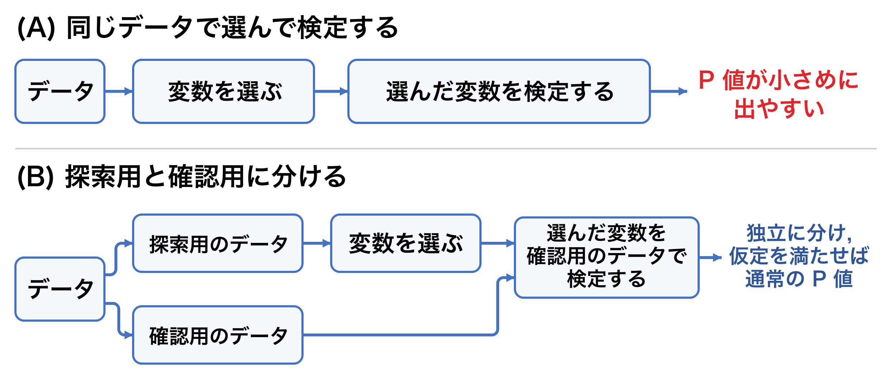
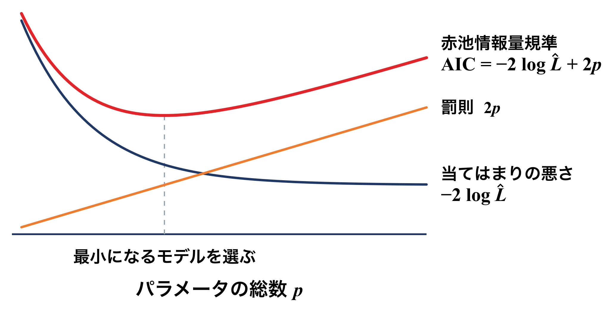
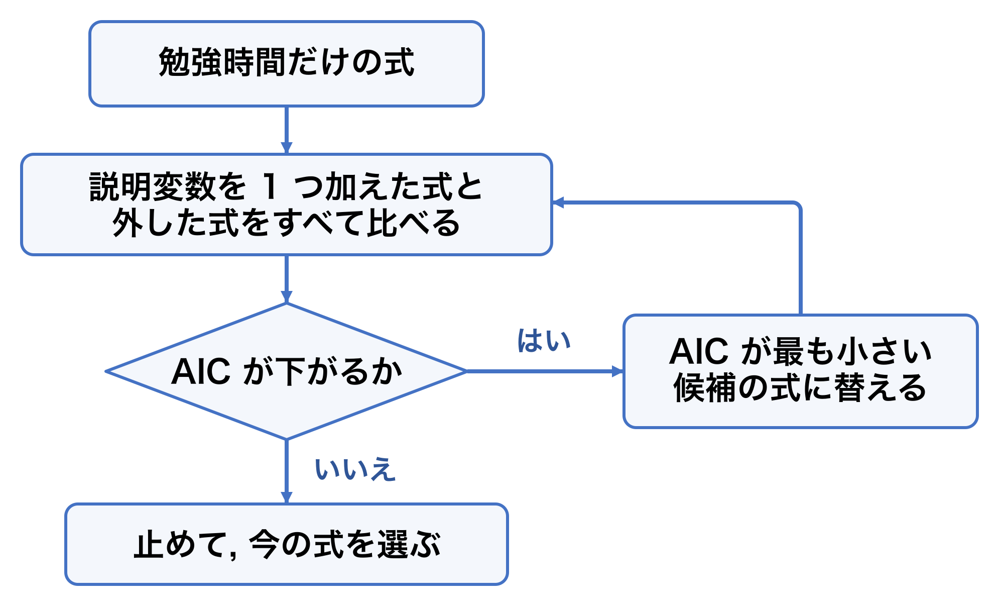

モデル選択
因果推論とは何かでは, 介入の効果を求めるときにそろえる変数を, 因果の構造についての仮定から決めました. 予測とは何かでは, 予測時に得られる情報から候補を作り, 新しいデータでの誤差が小さい式を選びました.
勉強時間と GPA の関係を調べる回帰式に, アルバイト時間を入れるかどうかを考えます. アルバイト時間を入れると, 勉強時間の係数はアルバイト時間が同じ学生どうしの比較を表します. 新しい学生の GPA を予測する場合には, アルバイト時間を予測時に把握できるか, その情報を使うと予測の誤差が減るかを調べます.
候補の説明変数のうち, どれを回帰式に入れるかを決めることを変数選択と呼びます. モデル選択は, 変数の組み合わせや回帰式の形が異なる候補から, 使うモデルを決めることです. どの変数を入れるべきかは, 回帰分析を何のために行うかによって変わります. 目的が決まると, 候補を比べる基準と, 選んだ式で確かめる結果が決まります.
目的ごとの変数の選び方
回帰分析の目的の問いを使い, アルバイト時間を式に入れる基準を比べます. 「回帰分析の目的」では, 結果が誰について何を述べるかで, 関係の定量化と母集団への推測, 予測, 因果推論に分けました. 表は, その 3 つの目的に, どの目的にも先立って行うことがある探索を加えた, 本稿の整理です. 関係の定量化と母集団への推測は, 表では「関係の定量化」と書きます.
| 目的 | GPA についての問い | 変数の選び方 | 得る結果 |
|---|---|---|---|
| 関係の定量化 | アルバイト時間が同じで, 勉強時間が週 1 時間違う学生では, 平均 GPA はどれだけ違うか | 比較の条件にアルバイト時間を含めると, データを見る前に決めます. | 条件をそろえた平均の差を, 係数と信頼区間で示します. |
| 予測 | 新しい学生の GPA をどれだけ正確に当てられるか | 予測時に得られる変数を候補にし, 検証データか交差検証で予測誤差を比べます. | 選んだ式の予測誤差をテストデータで測ります. |
| 因果推論 | 勉強時間を増やす取り組みをすると, 平均 GPA はどう変わるか | 介入の内容と, アルバイト時間などがどう決まるかについての仮定から, そろえる変数を決めます. | 仮定とともに, 介入した場合としなかった場合の平均の差を示します. |
| 探索 | 時間の使い方について, 次に確かめる価値のある関係は何か | 散布図や回帰の結果を見て, 次に調べる変数を選べます. | 選んだ関係を仮説とし, 別のデータで確かめます. |
関係の定量化と予測では, 良いモデルの基準が違います. 関係の定量化では係数が問いで定めた比較を正しく表すことが求められ, 予測では新しいデータでの誤差が小さいことが求められます. 予測の誤差が最も小さいモデルが, 係数を読むのに最も適したモデルであるとは限りません.
回帰分析の目的で紹介した Shmueli の「説明」は, 因果の仮説を検証することで, 表の因果推論にあたります. Shmueli (2010, Section 2.6.2) は, 説明のためのモデルでは, 関係の強さを評価して決定係数などの指標や式全体の F 検定の有意性を報告すると述べています. 予測のためのモデルでは, 新しいデータでの予測性能を重視し, 当てはめに使わなかったデータで評価します.
関係の定量化
勉強時間の係数を読むとき, 式に含めた他の説明変数は値をそろえる条件になります. 例えば奨学生区分とアルバイト時間をそろえると決めたら, 両方を式に入れます. 片方を式から外すと, 勉強時間の係数はその変数に条件を付けない比較を表します. そろえる条件は問いで先に決め, 推定後に P 値で変数を外す操作は避けます. 有意でなかった係数も信頼区間とともに示せば, どの程度の大きさの差までデータと整合するかを読めます. 係数の読み方は偏回帰係数とそろえる条件, GPA での計算は関係の定量化: 式を問いで決めるにあります.
予測
アルバイト時間を予測時に得られるなら, その変数を使う式と使わない式を候補にできます. 候補ごとの係数を訓練データで求め, 当てはめに使わなかった検証データの誤差で比べます. 交差検証では検証用にする組を交替させ, 各組で測った誤差をまとめて比べます. テストデータは候補を比べる前に取り分け, 式が決まった後に 1 回だけ評価に使います. 予測が目的のときは, 情報量規準で扱う AIC も候補を比べる規準になります. データの役割は訓練データ・検証データ・テストデータ, GPA で候補を比べる計算は予測: 交差検証で選び, テストデータで 1 回だけ評価するにあります.
因果推論
勉強時間を増やすとアルバイト時間も変わり, それが GPA につながると仮定します. この構造で勉強時間への介入の結果をすべての経路について求めるなら, 途中にあるアルバイト時間には条件を付けません. 一方, 介入前のアルバイト時間が勉強時間と GPA の共通の原因だと仮定するなら, アルバイト時間をそろえます. そろえる変数は, 介入の問いと因果の構造についての仮定から決めます. データへの当てはまりからは経路の向きを決められません. アルバイト時間が決まる仕組みでは, 観測データの分布が同じでも介入の結果が異なる例を示しています.
探索
例えば勉強時間と GPA の散布図を見て, アルバイト時間が似ている学生に絞っても同じ傾向が見られるかを調べます. 探索中に比べる条件を変えたり, P 値や AIC を手がかりに変数を選んだりしてかまいません. 選んだモデルで見つけた関係は, 次のデータで調べる仮説として扱います. GPA で探索と確認を分ける手順は探索: 探索用で選び, 確認用で確かめるにあります. 選んだ式の係数を検定したり信頼区間を求めたりするときは, 確認用の標本を使う方法や, 選択を検定や区間の計算に含める方法があります. 詳しくは選んだ後の推論を参照してください. 調整変数の選び方や分析手順の報告に関する文献を探すときは, 学問分野ごとの手法の違いと経緯に挙げた用語が使えます.
同じデータで選んで検定する手順
目的を区別しないまま, 1 つのデータで変数を選び, 同じデータで検定した結果を結論にする方法には問題があります. 例えば, 係数の P 値を使う次の手順はよく使われています.
- 候補の説明変数をすべて入れて回帰式を当てはめます.
- 定数項を除き, P 値が 0.05 以上で最も大きい変数を 1 つ外し, 当てはめ直します.
- 残った説明変数の P 値がすべて 0.05 未満になるか, 説明変数がなくなるまで手順 2 を繰り返します.
通常の P 値は, 分析の前に決めた 1 つのモデルを検定することを前提に計算します. データを見てモデルを選んだ手順は, この計算に含まれません. 手順 2 は, 手元のデータでたまたま目的変数との関係が強く出た変数を残し, 弱く出た変数を外します. 残った変数の P 値は, そのように選ばれたことを考慮せずに同じデータで計算するので, 目的変数と関係のない変数でも小さくなりやすくなります. その結果, 係数が 0 であっても有意と判断する頻度が, 予定した有意水準を上回ることがあります.
Freedman (1983) は, 目的変数と無関係な説明変数でも, ふるい分けの後で式を当てはめ直すと, 式全体の F 検定が有意になり得ることを示しました. Harrell (2015) は, 変数を 1 つずつ加えるか外して式を選ぶステップワイズ法で選んだ式に対する通常の検定や区間推定の問題を挙げています.
無関係な 50 個の変数からこの手順で選んだシミュレーションでは, ほとんどの回で 1 つ以上の変数が「有意」として残りました. 詳しくは目的変数と無関係な変数を P 値で選ぶシミュレーションで確かめられます.
次の図は, (A) 手順 1〜3 のように同じデータで変数を選んで検定する流れと, (B) データを探索用と確認用に分ける流れを比べた模式図です. (A) では, 変数を選んだデータで検定するので, P 値が小さめに出やすくなります. (B) では, 探索用のデータで変数を選び, 選んだ式を確認用のデータで検定します. 確認用のデータにとって, その式は分析の前に決めた 1 つのモデルです. 探索用と確認用が独立で, 検定の手法の仮定が成り立てば, 確認用のデータで計算した通常の P 値を使えます. 分け方の注意は選んだ後の推論で扱います.

すべての変数を入れて P 値で比べることの問題
測った変数をすべて式に入れても, 係数ごとの P 値は, それぞれの係数が 0 かどうかを調べる量です. 「どの要因が重要か」を答えるには, 重要さを何で測るのかを定める必要があります. 係数表を読むときには, 次の 3 点を区別します.
- 推定の精度. 係数が 0 かを調べるときの t 統計量は, 推定した係数をその標準誤差で割った値です. 同じ大きさの係数でも, 標準誤差が小さければ P 値は小さくなります. 標準誤差は, 標本の大きさ, 説明変数のばらつき, 多重共線性などで変わります. 標準誤差と t 統計量の読み方は単回帰の係数と国の組み合わせにあります. 計算の詳細は回帰係数の分布・信頼区間・検定と多重共線性と係数の精度を参照してください.
- 係数の単位. 係数の単位は説明変数の単位で決まります. 2 つの区分を 0 と 1 で表すダミー変数では区分間の平均の差, 量的な説明変数ではその変数 1 単位あたりの平均の差を係数が表します. 例えば奨学生区分の係数は区分間の平均の差で, 勉強時間の係数は週 1 時間あたりの平均の差です. 勉強時間を分に直すと, 同じ回帰式の傾きの数値は小さくなります. 標準誤差も同じ倍率で変わるため, P 値は同じです. 係数の大きさを比べるなら, 各変数の何単位の差を比べるかを決めます. 係数の単位と標準化に例があります.
- そろえる条件. ある変数の係数は, 式に入った他の変数をそろえた比較です. ある変数から目的変数に至る経路の途中に別の説明変数があれば, その中間の変数を固定した比較には経由する経路が入りません. 変数ごとに因果の問いを立てると, そろえるべき条件も変わります. 一つの変数への介入を調べるために調整した式で, 他の変数の係数まで一律に介入の効果と読むことを, Table 2 の誤りと呼びます (Westreich & Greenland, 2013).
合成 GPA の係数と P 値
重回帰分析と同じように, 架空の学生 100 人のデータから最終評価用の 30 人を先に取り分けました. 残った 70 人の観測 GPA に, 奨学生区分, 勉強時間, アルバイト時間, 運動時間を含む切片つきの回帰式を最小二乗法で当てはめました. 重回帰の係数と信頼区間で使った式に運動時間を加えた式です. 時間はどれも週あたりの時間で, 奨学生区分には奨学生を 1, 非奨学生を 0 とするダミー変数を使いました. 表の P 値は各係数が 0 かを調べる通常の両側 t 検定の値です.
| 説明変数 | 係数 | 標準誤差 | P 値 |
|---|---|---|---|
| 奨学生区分 | 0.503 | 0.054 | 1.27\times 10^{-13} |
| 勉強時間 | 0.209 | 0.012 | 1.14\times 10^{-25} |
| アルバイト時間 | -0.090 | 0.016 | 2.84\times 10^{-7} |
| 運動時間 | 0.002 | 0.013 | 0.853 |
勉強時間の P 値は奨学生区分の P 値より小さく, 係数の数値は奨学生区分の方が大きくなりました. 勉強時間の係数が表すのは, 他の 3 変数が同じで, 勉強時間が週 1 時間長い学生の平均 GPA が, 式の上で 0.209 高いという比較です. 奨学生区分については, 他の 3 変数が同じ学生を奨学生と非奨学生に分けて比べます.
この合成データでは, 勉強時間からアルバイト時間を経由して GPA に至る関係を仮定しています. アルバイト時間を式に入れると, 勉強時間の係数は, アルバイト時間が同じ学生どうしで勉強時間が違うときの平均 GPA の差を表します. そのため, 勉強時間の違いがアルバイト時間を通じて GPA に結びつく分は, この係数に含まれません. アルバイト時間の P 値の大小によらず, すべての経路を含む介入の問いでは, この構造でアルバイト時間を固定しません.
偏回帰係数とそろえる条件で述べたように, 観測 GPA は潜在得点を 0〜4 点で打ち切った値です. 表の係数は観測 GPA の平均を線形式で近似した値です. 潜在得点を作る式の係数との違いはアルバイト時間が決まる仕組みにあります.
パネルデータで同じ個体を比べる
同じ個体を複数の時点で観測したデータをパネルデータと呼びます. 個体 i の時点 t での観測値を y_{it} と x_{it} とし, 個体ごとに切片 \alpha_i を置くと, 式は次の形になります.
y_{it} = \alpha_i + \beta x_{it} + \varepsilon_{it}.
個体ごとの切片 \alpha_i は個体固定効果です. 同じ個体の異なる時点の式の差を取ると, 切片が打ち消されます. \beta は, 時点によらず一定の個体の違いを切片でそろえた上で, 同じ個体の中で x_{it} が異なる時点を比べる係数です. 多くの説明変数を式に入れて P 値で順位をつける場合には, 推定の精度, 係数の単位, そろえる条件の 3 点がパネル分析にも当てはまります.
情報量規準
予測が目的で, データを分けずに候補を比べるときは, AIC (赤池情報量規準) がよく使われます. 運動時間の項を式に加えると, 係数を一つ余分に使って手元の GPA を当てはめられます. 情報量規準では, 手元のデータへの当てはまりを表す量に, パラメータが増えるほど大きくなる項を足して候補を比べます.
当てはまりを表す尤度は, 観測したデータが各パラメータのもとでどれほど得られやすいかを表します. 連続値のモデルでは確率密度を使います. パラメータを最もよく当てはまる値にしたときの尤度を \hat L とします. 尤度の定義は尤度にあります.
情報量規準の式で使う p は推定するパラメータの総数, n は標本の大きさです. 切片と誤差分散も推定する正規線形回帰では, 説明変数を k 個とすると p=k+2 です.
\mathrm{AIC}=-2\log\hat L+2p.
AIC は, 同じ仕組みから得る新しいデータへの当てはまりを, 対数尤度を使って見積もる規準です (小西 & 北川, 2004). 手元のデータで最大化した対数尤度は新しいデータに対する値より良く出やすいため, パラメータ数に応じた項を加えます.
次の図は, 説明変数を一つずつ増やした候補の回帰式を順に並べ, AIC の 2 つの項とその和を描いた模式図で, 曲線は実データから計算した値ではありません. -2\log\hat L は当てはまりが良いほど小さくなるので, 図では当てはまりの悪さと書きました. 説明変数を加えても手元のデータへの当てはまりは悪くならないため, -2\log\hat L は大きくなりません. 図の例では -2\log\hat L の下がり幅が次第に小さくなり, パラメータ数に応じて加える 2p (罰則の項) は一定の幅で増えるため, 和の AIC は途中で最小になります. AIC で比べるときは, この和が最も小さい候補の式を選びます.

BIC (ベイズ情報量規準) は次の式で計算します.
\mathrm{BIC}=-2\log\hat L+p\log n.
BIC は, 候補ごとに尤度をパラメータの事前分布で平均し, 得られた値を比べる考え方から導かれます. n が 8 以上では \log n>2 なので, パラメータを一つ増やしたときに加える値は BIC の方が大きくなります.
どちらの規準でも, 同じ観測について尤度を求めた候補の間で, 規準の値が小さい式を選びます. 回帰の結果に AIC や BIC が表示されていれば, 候補の式の値を並べて比べます.
合成 GPA の係数と P 値で使った 70 人で, 運動時間を入れる式と外す式を比べます.
| 回帰式 | AIC | BIC |
|---|---|---|
| 運動時間を入れる | -5.09 | 8.40 |
| 運動時間を外す | -7.06 | 4.19 |
どちらの規準でも, この 2 式では運動時間を外した方が小さくなりました. 丸める前の値から求めた AIC の差は 1.96 です. 最小の AIC との差が 2 程度以内なら, データから相応の支持がある候補に残すという目安があります (Burnham & Anderson, 2002). この目安では, 運動時間を入れた式も候補に残ります.
係数を一つ加えた式で AIC が下がるには, 最大対数尤度の増分が 1 を超える必要があります. 追加した係数が 0 かを調べる尤度比検定では, この増分の 2 倍を自由度 1 のカイ二乗分布に照らします. 入れ子の式を比べ, この大標本近似が成り立つ条件では, AIC が小さい方に切り替えることは, 尤度比検定の P 値が約 0.157 未満で追加の項を残すことに対応します (Heinze et al., 2018). 回帰の係数表に表示される t 検定の P 値は別の計算で得られます. 尤度比検定の P 値が 0.05 以上でも約 0.157 未満なら, AIC では追加の項を含む式を選びます. 予測が目的なら, P 値が 0.05 以上の変数が式に残ってもかまいません. 同じ標本で AIC を使って式を選び, その式の係数に通常の検定や区間推定を適用すると, P 値や信頼区間の計算は式を固定して行われ, AIC による選択の影響が含まれません.
ステップワイズ法
ステップワイズ法では, 説明変数を一つずつ加えるか外し, そのたびに候補の式を当てはめます. 例えば勉強時間だけの式から始めると, 次の候補は奨学生区分, アルバイト時間, 運動時間をそれぞれ一つ加えた式です. 加える基準を満たす候補があれば, その変数を入れた式を次の比較の出発点にします. どの式から出発し, どの変更を許すかによって, 次の選び方があります (Heinze et al., 2018; James et al., 2021, 6).
| 選び方 | 出発する式 | 各段階の操作 |
|---|---|---|
| 前進選択 | 切片だけの式や, 必ず入れる変数だけを含む式 | 基準を満たす変数を一つずつ加えます. |
| 後退消去 | 候補をすべて含む式 | 基準を満たさない変数を一つずつ外します. |
| 両方向 | 切片だけの式や, あらかじめ指定した式 | 変数を加える操作と外す操作の両方を候補にし, 基準に従って式を更新します. |
P 値を基準にするなら, 前進選択では候補に加える変数のうち, P 値が最小で所定の値を下回るものを採ります. 後退消去では式に残っている変数のうち, P 値が最大で所定の値以上のものを外します. AIC を使うなら, 変更した候補のうち AIC が最も小さくなる式を採り, 検討したどの変更でも AIC が下がらなくなったところで止めます. いずれも現在の式から一つ変えた候補を比べるので, 最終的な式は出発点や途中で採った変数に左右されます.
次の図は, 勉強時間だけの式から出発し, AIC を基準に両方向で選ぶ流れを描いた模式図です. 各段階で, 現在の式に説明変数を一つ加えた候補と一つ外した候補をすべて当てはめます. 候補のうち最も小さい AIC が現在の式の AIC より小さければ, その候補に替えて比較を繰り返します. どの候補でも AIC が下がらなければ止め, そのときの式を選びます.

予測では, ステップワイズ法で予測に使う候補を作り, 検証データか交差検証で誤差を比べられます. 探索で候補を絞った場合には, 得られた関係を別のデータで確かめます. 因果推論でそろえる変数は, 介入の問いと構造の仮定で決めます. ステップワイズ法の基準に使う P 値や AIC には, その変数がどの経路にあるかという情報は入りません.
関係の定量化では, 選んだ後に同じデータで計算する通常の P 値は小さめに出やすく, 信頼区間も予定した被覆率を保てないことがあります. P 値が小さめに出やすい理由は同じデータで選んで検定する手順で述べました.
目的ごとに変数を選ぶでは, 架空の学生の学習用 70 人から始め, 関係の定量化, 予測, 探索のそれぞれの目的に沿って式を選びます.
演習
Exercise REG-SELECTION-1
問いに応じてアルバイト時間を選ぶ
次の (a)〜(d) について, 回帰の目的を答え, アルバイト時間を式に入れるかどうかを何で決めるか説明してください.
- 奨学生区分とアルバイト時間が同じ学生どうしで, 勉強時間が週 1 時間違うときの平均 GPA の差を求めたい.
- 学期の初めに各学生のアルバイト時間の予定が分かる. この情報を使うと学期末の GPA の予測がどれだけ良くなるかを知りたい.
- 勉強時間を延ばす取り組みを行うと, アルバイト時間が減り, それを経由しても GPA が変わると仮定する. すべての経路を含む介入の平均差を知りたい.
- 時間の使い方をいくつか記録したところ, アルバイト時間と GPA の散布図に関係が見えた. 次に調べる仮説を立てたい.
回答
- 関係の定量化です. 問いでアルバイト時間をそろえると決めているので, 奨学生区分とともに式に入れます. 勉強時間の係数は信頼区間とともに報告します.
- 予測です. 予定時間を含む式と含まない式を検証データか交差検証で比べ, 未使用データでの誤差を基準に選びます. テストデータは式を選んだ後に評価に使います.
- 因果推論です. この仮定では, アルバイト時間は介入した勉強時間から GPA までの中間の変数です. アルバイト時間を固定するとその経路を含む差が求められないので, 固定する条件から外します.
- 探索です. アルバイト時間を入れた式も使い, どの条件をそろえたときに関係が見られるかを調べます. 見つけた関係を仮説として, 変数の選択に使っていないデータで確かめます.
Exercise REG-SELECTION-2
一つの係数表で比べられること
合成 GPA の係数と P 値の表を使います. 「勉強時間の P 値は奨学生区分の P 値より小さいので, 勉強時間の方が GPA を大きく変える」と報告したとします. P 値が何を測るか, 係数の単位, アルバイト時間をそろえていることの 3 点から, この報告に必要な修正を述べてください.
回答
- 各 P 値は, 対応する係数が 0 かを調べる値です. 係数を標準誤差で割った t 統計量から求めるため, P 値の順位から係数の大小は判断できません.
- 勉強時間の係数は週 1 時間の差に対する値で, 奨学生区分の係数は二つの区分間の差です. 何単位の差を比べるかを指定して, それぞれの平均の差を報告します.
- 勉強時間の係数は, アルバイト時間を含む他の条件が同じ学生どうしの比較です. アルバイト時間が中間の変数になる構造では, その時間を経由する経路が比較から外れます. 勉強時間への介入についてすべての経路を含む平均差を述べるには, 因果の問いとそろえる条件を改めて定めます.